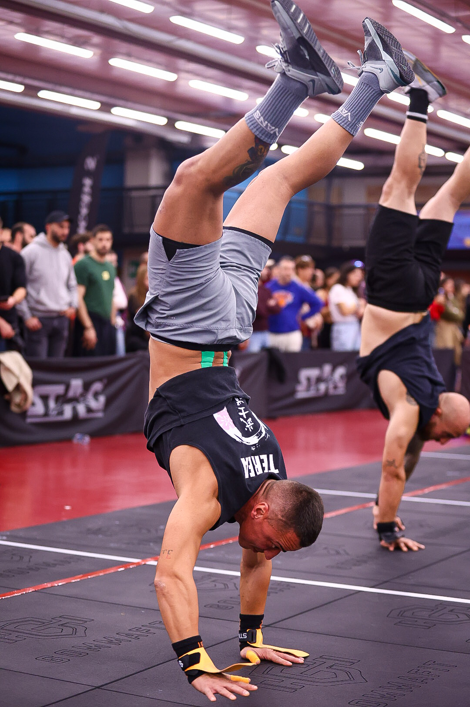
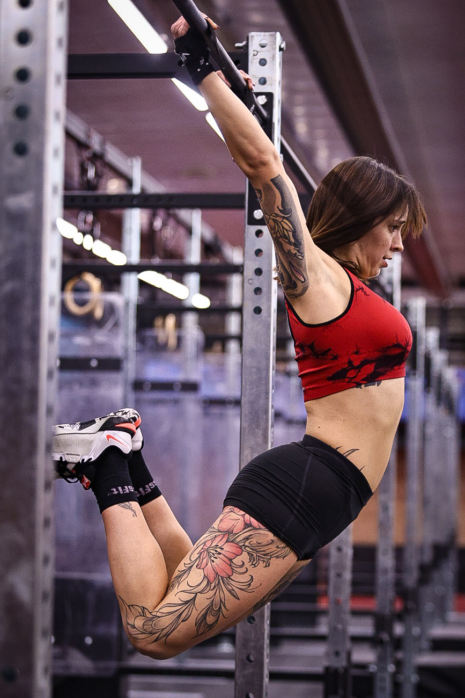

The second Throwdown d’Acciaio brought 216 athletes to the Palazzetto dello Sport Aldo De Santis in Terni on 7 and 8 November 2026 for two days of CrossTraining competition.
Competitors travelled from across Italy, with international participation from France and Romania. The event divided the programme between team competition on Saturday and individual competition on Sunday.
Team strategy and individual tests
The team programme placed coordination and shared pacing alongside strength and endurance. The individual competition then moved the focus to each athlete’s ability to manage gymnastic, weightlifting and metabolic challenges across the available divisions.


A competition rooted in community
The 2026 field was twice the size of the previous edition, according to local reporting. Organisers described the event as both a competitive test and a meeting point for a growing CrossTraining community in Terni.
The edition was dedicated to the memory of Nicholas Colombini.
Image Media coverage
Reporting: IM News Editorial Desk
Coverage photographers: Eduardo Castro; Johnny / Image Media
Dates, venue, participation and competition format checked against the organiser, the City of Terni and local event reporting.